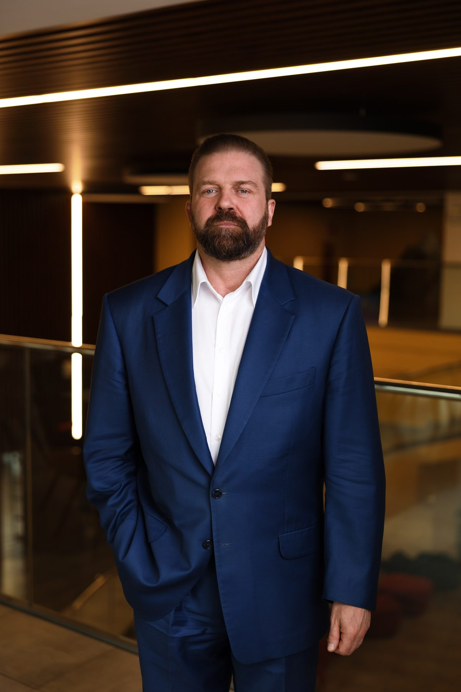
Смыслы ждут решений!
Дмитрий
Бобров
Российский экономист и предприниматель, кандидат экономических наук.
Директор Института социально-экономических наук РГГУ.
- Эксперт по политэкономическому анализу проблем современного общества, платформенной экономике, стратегическому и корпоративному управлению, развитию человеческого потенциала.
- Автор научных направлений «Суверенная социальная экономика» и «Социальный менеджмент».
- Создатель уникальных управленческих методик на стыке экономики, социологии и менеджмента.
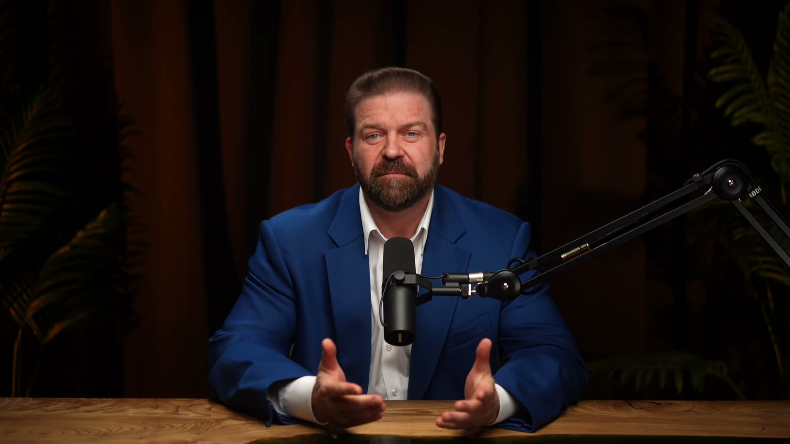
01 Институт
Экономика, управление и социальные науки - в единой среде
Институт готовит специалистов, способных работать со сложными социально-экономическими системами, и формирует научную повестку, отвечающую на запросы государства, бизнеса и общества.
В работе директора ИСЭН РГГУ Дмитрий Бобров уделяет внимание развитию образовательных программ, научных направлений и проектной деятельности. Приоритет - применение академических знаний для решения управленческих и социально-экономических задач.
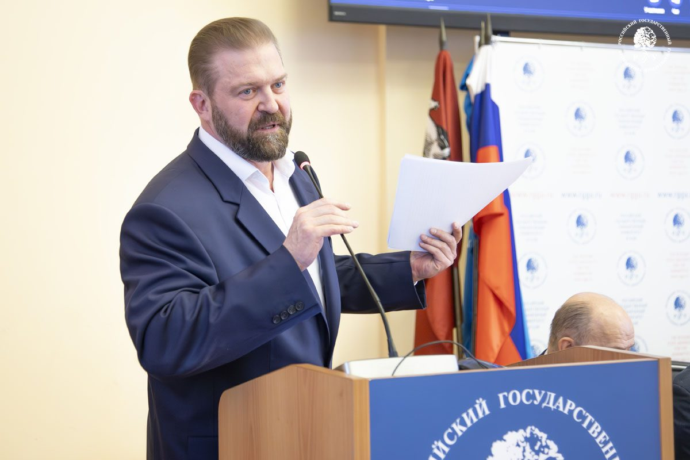
Объединяющая идея
Цель - развитие человеческого потенциала
Человек - не только носитель знаний и навыков. Потенциал включает способности, ценности, устремления и возможность найти своё место в созидательной деятельности.
Человек
Возможности, достоинство, профессиональная траектория и качество жизни.
Система
Цели, ответственность, институты и устойчивые управленческие процессы.
Созидание
Знание, которое превращается в развитие организации, территории и общества.
02 Наука
Суверенная социальная экономика, менеджмент крупных хозяйственных систем, управление развитием человека
Дмитрий Бобров - автор научного направления «Теория и практика суверенной социальной экономики», сформированного на базе ИСЭН РГГУ.
В центре исследований - модель развития, которая соединяет экономическую устойчивость, национальные интересы, социальную справедливость и воспроизводство человеческого потенциала.
Направления исследований- Суверенная социальная экономика и трансформация экономических моделей
- Человеческий потенциал, человеческий капитал и качество жизни
- Социальный менеджмент и управление организационными системами
- Демография, территориальное неравенство и воспроизводство кадров
- Политэкономический анализ и стратегическое прогнозирование
- Развитие производительных сил
- Платформенная экономика и применение ИИ-агентов в промышленности и торговле
Научная и образовательная деятельность
Директор Института социально-экономических наук РГГУ, кандидат экономических наук, доцент.
Автор научных направлений «Суверенная социальная экономика» и «Социальный менеджмент», эксперт по политэкономическому анализу проблем современного общества, платформенной экономике, стратегическому и корпоративному управлению, развитию человеческого потенциала.
Автор более 30 научных работ, в том числе монографии «Корпоративная социальная политика: теоретические основы и методические аспекты», соавтор учебников: «Основы суверенной социальной экономики», «Социальный менеджмент», «История современной России. 1985-2025 гг.».
В 2016 году защитил кандидатскую диссертацию на тему: «Социальная политика крупной хозяйственной системы: содержание, методическое обеспечение, развитие» в Государственном университете управления.
Избранные публикации
2025-2026
Научная школа «Теория и практика суверенной социальной экономики»: предпосылки формирования и механизмы реализации
Исследовательская программаСуверенная социальная экономика: человеческий капитал и образование
Образование и развитиеSovereign Social Economy: New Opportunities for Improving the Quality of Life
Quality of lifeКорпоративная социальная политика: теоретические основы и методические аспекты
Монография03 Проекты
Опыт управления системами разного масштаба
Подход Дмитрия Боброва основан на опыте работы с системами, которые различаются по масштабу, целям и ответственности. Это позволяет видеть задачу через экономику, процессы, структуру, мотивацию людей и социальные последствия решений.
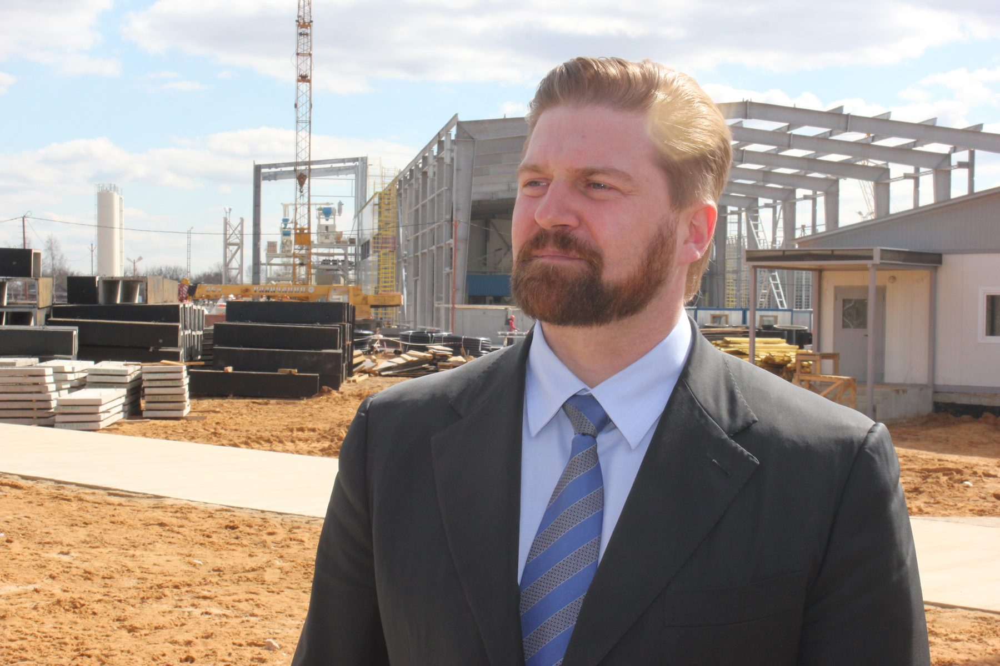
Высшее образование
Руководство Институтом, работа первым проректором РГГУ и заведующим кафедрой управления.
Предпринимательство
Создание и развитие компаний, масштабирование процессов и антикризисное управление.
Муниципальное управление
Опыт управления экономикой, инфраструктурой и социальной сферой Каширского района.
Управление бизнесом
В бизнесе с 1995 года. С 2001 года владелец многопрофильного бизнеса, включающего несколько направлений: наукоемкие технологии, IT-разработки, восстановление авиационной техники, строительство, сельское хозяйство, производство пищевых продуктов. Общая численность сотрудников - около 1000 человек.
Практический опыт и владение теорией кризис-менеджмента позволили вывести на прибыльность убыточные производства региона.
Опыт создания и масштабирования бизнес-процессов, а также академические знания в таких сферах, как экономика, управление, социология, маркетинг, психология, стали основой для создания авторских методик по эффективному управлению.
Руководство территорией
В 2012 году избран на должность главы города Кашира.
В 2013 году избран на должность главы Каширского муниципального района.
В 2015 году избран на должность главы городского округа Кашира и председателя Совета депутатов.
- Организовал работу по возвращению земель в сельхозоборот. За 2014-2015 годы введено в оборот более 5000 га земли, что позволило увеличить сбор зерновых в 2,5 раза по сравнению с предыдущим периодом.
- Обеспечил привлечение инвесторов для строительства ряда промышленных и аграрных предприятий, среди них крупнейший в регионе тепличный комплекс «Агрокультура Групп», крупнейший в РФ производитель тротуарной плитки - завод «Конгломерат», новая производственная линия филиала «Корыстово» Московского завода «Кристалл» и другие.
- Преодолел масштабный дефицит бюджета, провел модернизацию системы ЖКХ, строительство и реконструкцию жилых домов и объектов социальной инфраструктуры: детских садов, медицинских и спортивных учреждений, домов культуры и парков.
- По просьбам жителей совместно с региональными властями реализовал комплекс мер по закрытию полигона ТБО в Ожерелье Московской области.
- По итогам 2014 года вошел в десятку глав с наивысшим губернаторским рейтингом (рост с предпоследней позиции в рейтинге территорий).
- В 2015 году при поддержке Губернатора Московской области А.Ю. Воробьева в числе первых глав муниципалитетов преобразовал Каширский район в городской округ, что позволило выстроить эффективную систему управления, увеличить бюджет, повысить отдачу от инвестиций.
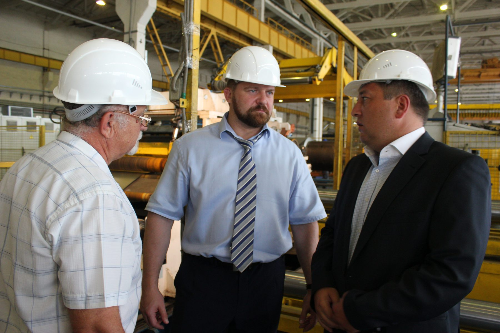
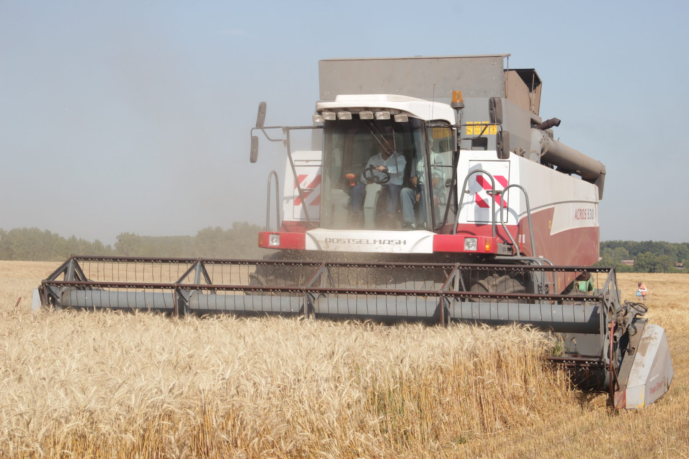
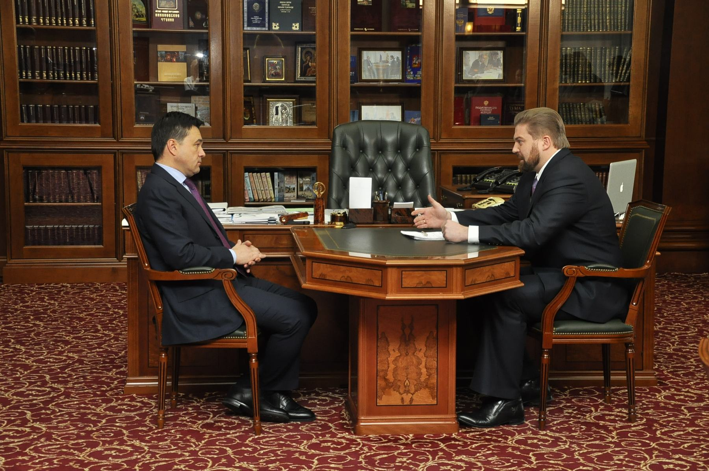
- Организовал изготовление точной копии боевого истребителя Як-9 «Каширский школьник» Героя Советского Союза Алексея Ивановича Выборнова. 7 мая 2015 года А.И. Выборнов, в возрасте 93 лет, принял участие в открытии памятника.
- Награжден благодарственным письмом и почетной грамотой Губернатора Московской области.
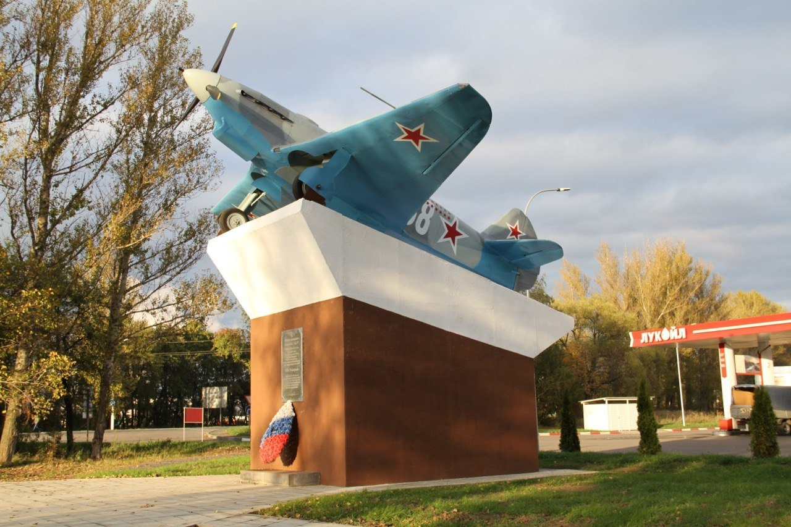
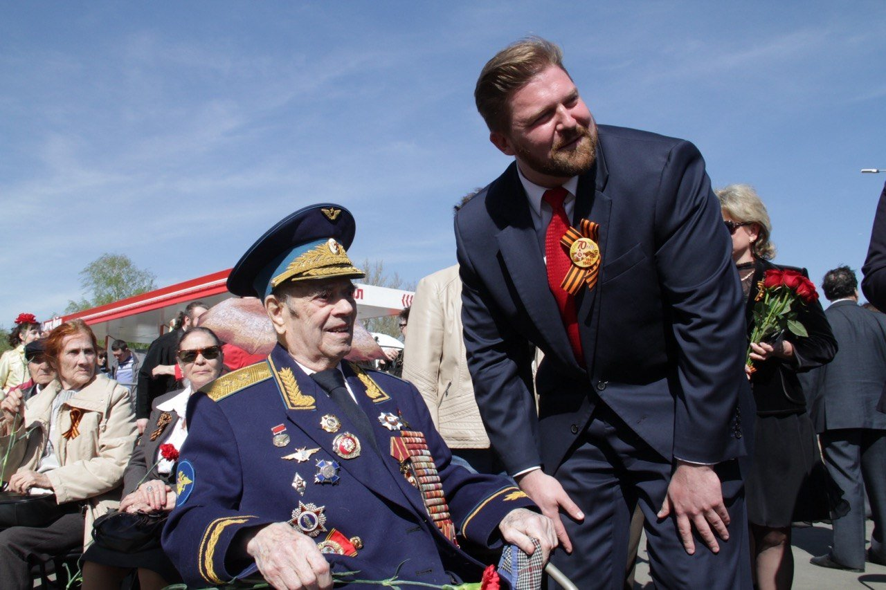
04 Экспертиза
Для руководителей, которым нужен системный взгляд на сложную задачу
Экспертная работа соединяет академический анализ с практикой управления организациями, проектами и территориями.
В центре - диагностика причин проблемы, ясная постановка цели, работа с людьми и построение устойчивой системы решений.
Обсудить задачу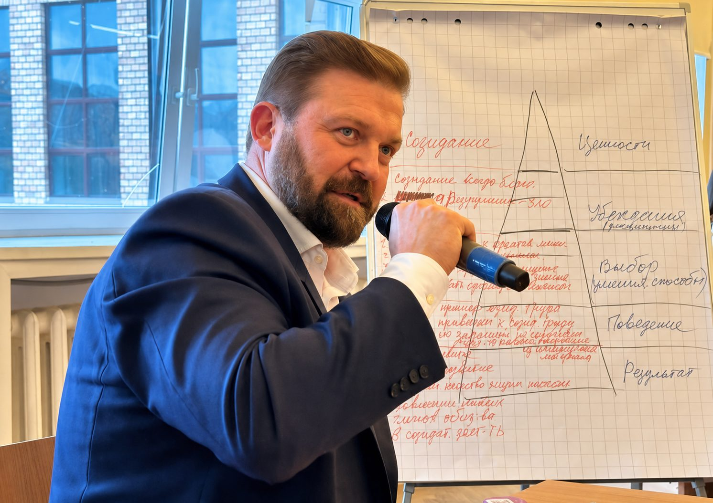
Стратегия и система управления
Цели, роли, зоны ответственности, процессы и контроль исполнения.
Масштабирование и изменения
Переход от ручного управления к воспроизводимой модели.
Антикризисное управление
Системные причины, приоритеты решений и восстановление устойчивости.
Команда и потенциал
Мотивация, культура и развитие руководителей и сотрудников.
Профессиональная стратегия
Сильные стороны, траектория, целеполагание и план действий.
Социально-экономическая аналитика
Оценка программ, институтов, территорий и значимых проектов.
Форматы работы
Экспертная консультацияДиагностическая сессияЛекция или семинарПроектное сопровождение
05 Выступления
О сложных системах - ясно, содержательно и с опорой на практику
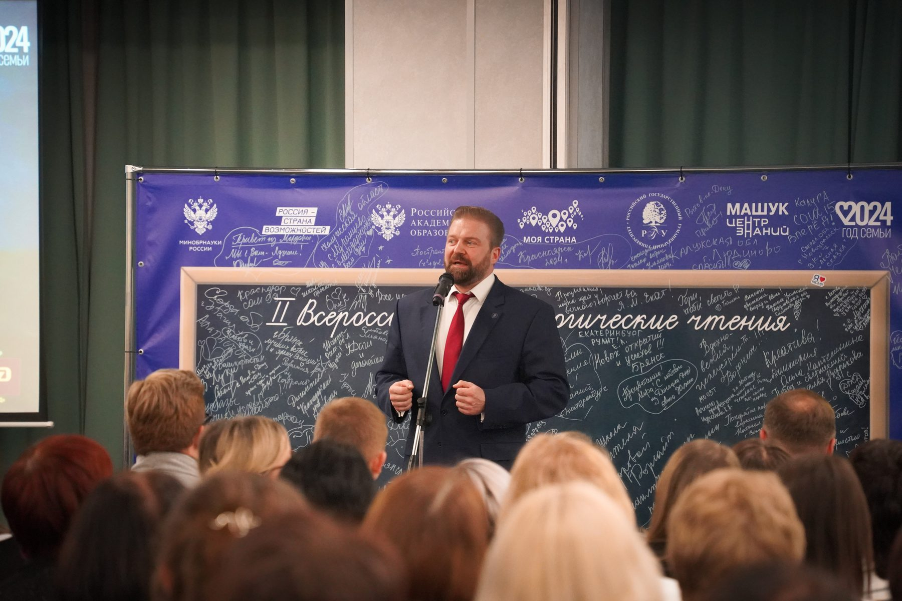
Научные конференции, экспертные сессии, образовательные форумы и деловые мероприятия.
Пригласить выступить Темы выступлений- Суверенная социальная экономика
- Человеческий потенциал и устойчивость
- Сильная система управления
- Профессиональная стратегия
- Образование и рынок труда
- Антикризисное управление
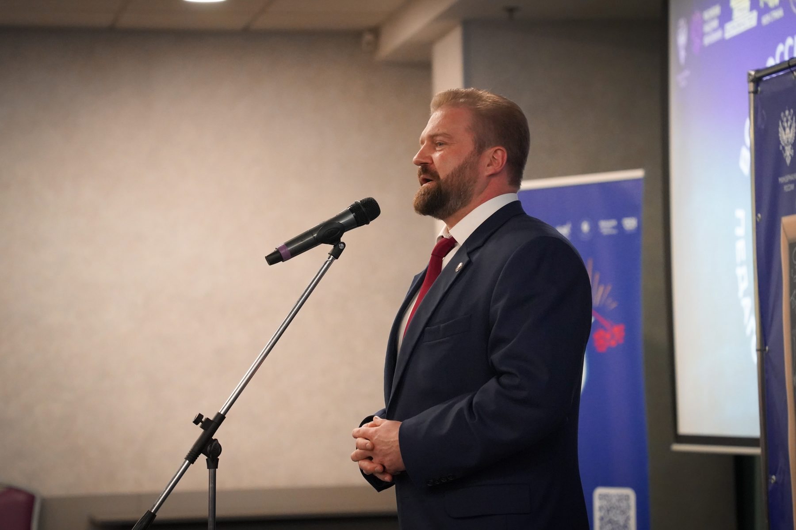
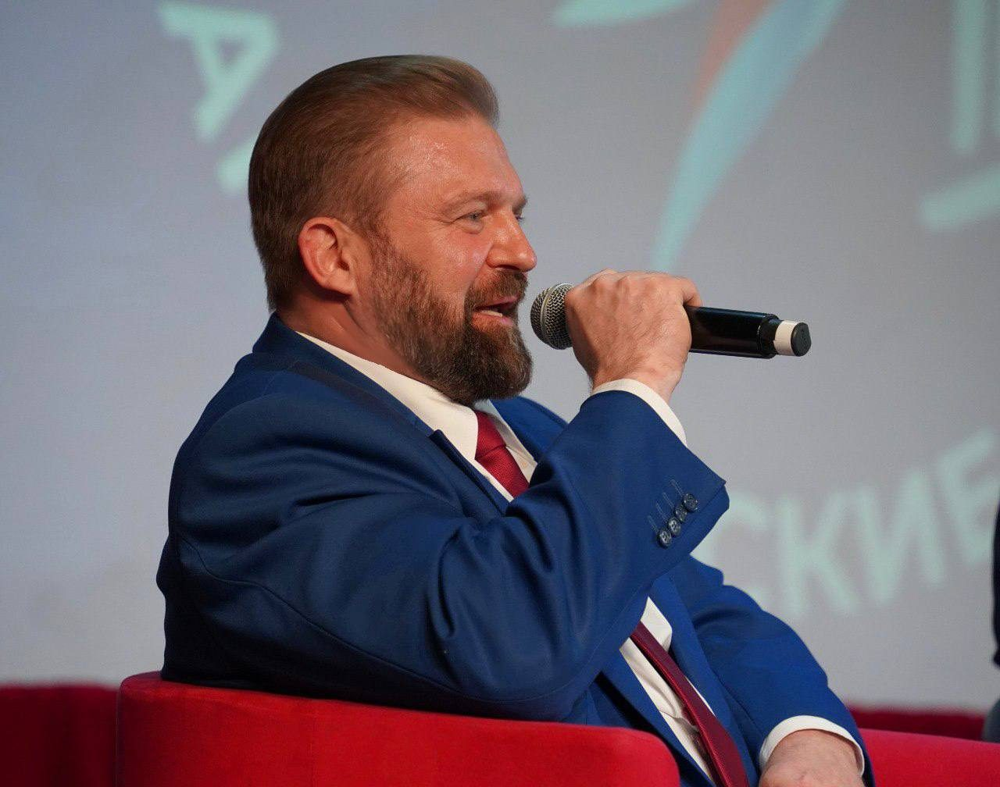
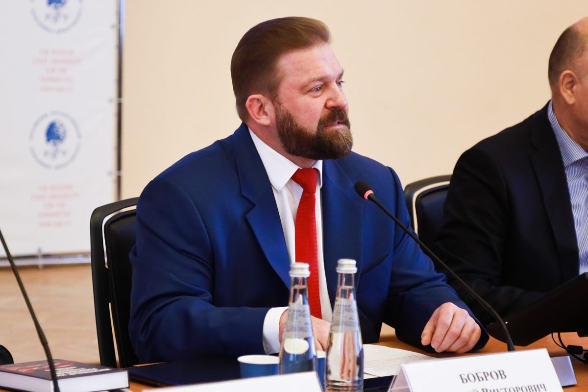
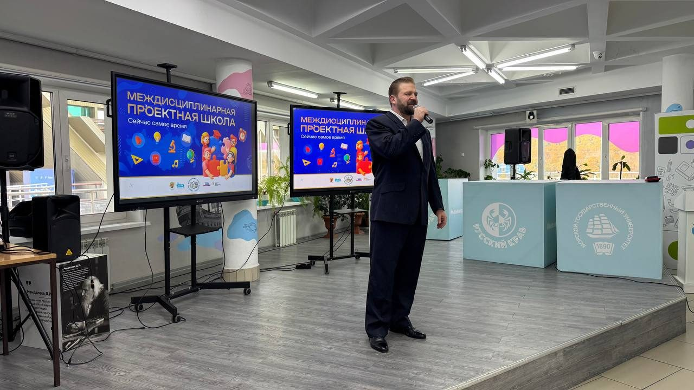
Медиа · материалы и каналы
Управление, личная стратегия, наука и образование - в практическом формате
Материалы для руководителей, специалистов, студентов и всех, кто предпочитает системный подход вместо разрозненных советов.
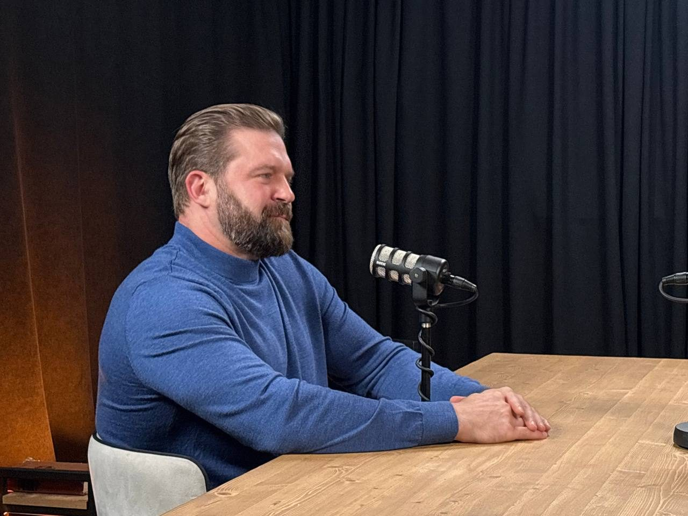
Короткие ролики
Из подкаста с Игорем Малининым · 6 роликов
06 Биография
Опыт, в котором соединились наука, управление, предпринимательство и спорт
Краткая биография
Дмитрий Викторович Бобров (родился 1 мая 1977 года, г. Кашира Московской области) - российский экономист, предприниматель, директор Института социально-экономических наук РГГУ, автор научных направлений «Суверенная социальная экономика» и «Социальный менеджмент».
В прошлом - профессиональный спортсмен, обладатель звания «Самый сильный человек России».
Среднюю школу окончил в г. Кашира экстерном в 1994 году. С 16 лет - в профессиональном спорте. Призер Гран-при Чемпионата мира по силовому экстриму в Ульяновске (1998 год), пятикратный победитель соревнований на звание «Самый сильный человек России». С 17 лет - автор и ведущий спортивной программы «Масса» на Каширском кабельном телевидении.
В 2001 году окончил Московский институт экономики, менеджмента и права по специальности «Финансы и кредит».
С 2001 года - владелец многопрофильного бизнеса. Также в течение ряда лет вел тренерскую и методическую работу в сети фитнес-клубов World Class, для которой разработал авторский курс лекций.
В начале 2000-х годов прошел обучение на Высших богословских курсах при Московской Духовной Академии, где изучил историю христианства и других мировых религий. В 2002 году поступил на вокальное отделение Института Современного Искусства, где обучался по классу «Академический вокал».
В 2004-2026 годах вел лекционные курсы по экономике, социологии, менеджменту в университетах Москвы (РГГУ, РАНХиГС при Президенте РФ, ИМЭС, Институт управления и информатики).
В 2010 году учредил и возглавил фонд содействия деятельности в сфере просвещения и духовного развития личности «Каширский родник».
С 2012 по 2019 год работал на высших руководящих должностях в органах исполнительной и законодательной власти.
С 2021 года - на руководящих должностях в системе высшего образования.
В 2023-2026 годах - проректор по управлению имущественным комплексом и проектной деятельности, первый проректор РГГУ.
С 2025 года по настоящее время - директор Института социально-экономических наук РГГУ.
Женат, отец трех дочерей.
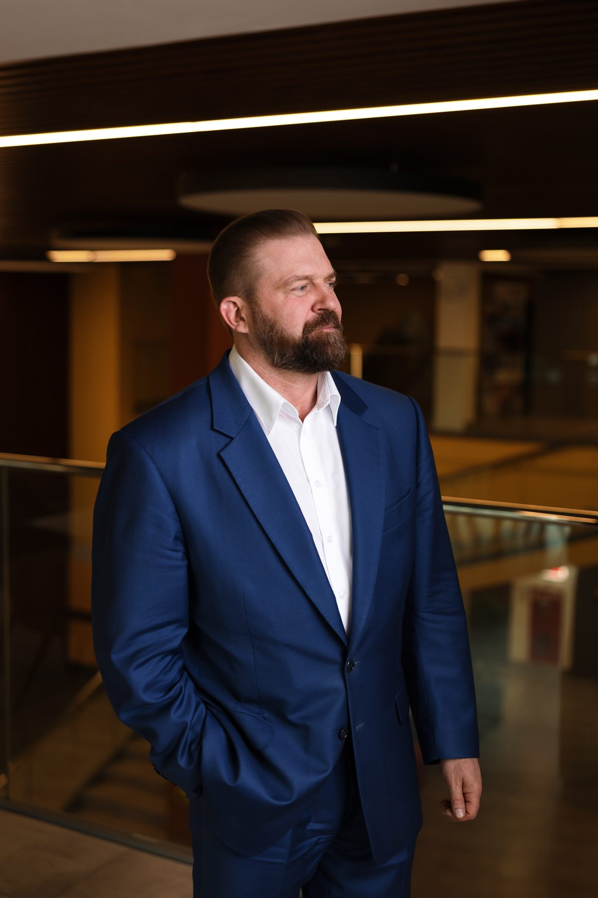
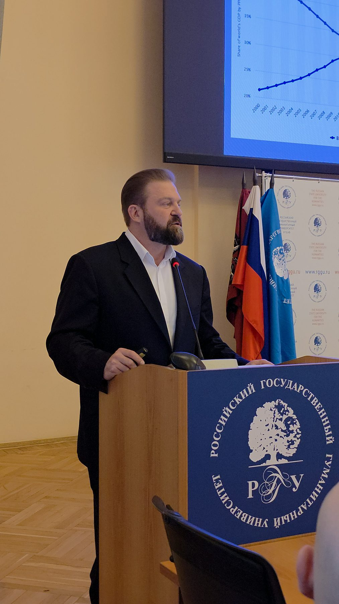
Предпринимательство
По настоящее время.
Работа в сфере высшего образования
Управление территорией
Избрание главой города Каширы.
Экономическая наука
Защита кандидатской диссертации.
Управление в сфере науки и высшего образования
ИСЭН РГГУ
Развитие института (по настоящее время).
Сегодня
Работа с бизнесом, консультирование и обучение руководителей и владельцев бизнесов.
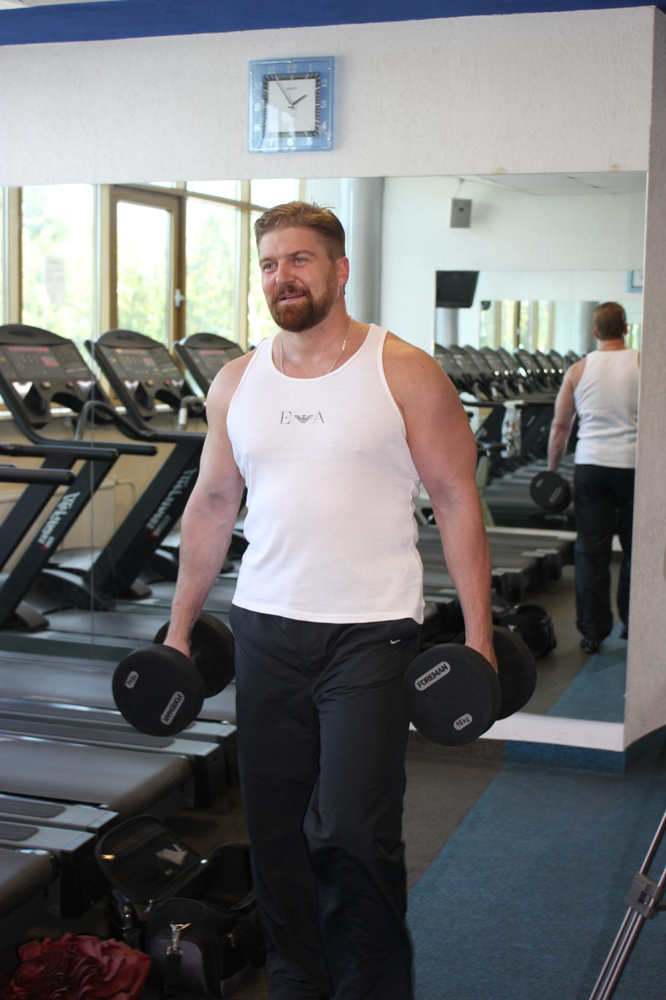
Спорт
Дисциплина как часть управленческого метода
- В школьные годы по результатам подмосковного чемпионата в Волоколамске стал лучшим футбольным вратарем Московской области.
- С 14 лет занимался единоборствами, с 2011 года - обладатель черного пояса Российской Национальной Федерации Каратэ Киокушинкай.
- С 15 лет увлекся бодибилдингом, а в 16 лет - выступил на открытом чемпионате Москвы по бодибилдингу, где занял 1 место в супертяжелой весовой категории, и 2-е - в абсолютной.
- С 20 лет занимался силовым экстримом, выступал на всероссийских и международных спортивных чемпионатах.
- Призер Гран-при Чемпионата мира по силовому экстриму в Ульяновске (1998 год).
- В период с 1998 по 2000 годы 5 раз побеждал на всероссийских соревнованиях по силовому экстриму на звание «Самый сильный человек России».
- Вел авторские лекционные курсы по теории и практике силовых тренировок, биомеханике, развитию спортивных качеств для тренерского состава сети фитнес-клубов World Class, выступал с лекциями и мастер-классами на международных фитнес-конвенциях и форумах.
- Член попечительского совета Всемирной федерации пауэрлифтинга без экипировки WRPF-Россия.
- Организатор международных турниров и мультиспортивных фестивалей Sarychev Power Expo.
Долгосрочное планирование, работа с нагрузкой, ответственность за результат и способность сохранять концентрацию в сложной ситуации стали частью управленческого подхода.
Сильный результат - это не разовое усилие, а система подготовки, обратной связи и последовательных действий.
07 Благотворительность
Фонд «Каширский родник»
В 2010 году учредил и возглавил фонд содействия деятельности в сфере просвещения и духовного развития личности «Каширский родник».
Фондом проведены работы:Восстановлен в историческом архитектурном облике храм Вознесения Господня в селе Большое Руново.
Построен храм в честь св. Петра и Февронии Муромских в г. Кашира.
Отремонтированы десятки спортзалов, актовых залов и учебных классов в школах, установлены детские игровые и спортивные площадки во дворах Каширы и Каширского района.
В течение ряда лет проводились семейные фестивали и творческие конкурсы «Счастливое Рождество» и «Светлое Христово Воскресение», объединившие более 5000 детей и взрослых.